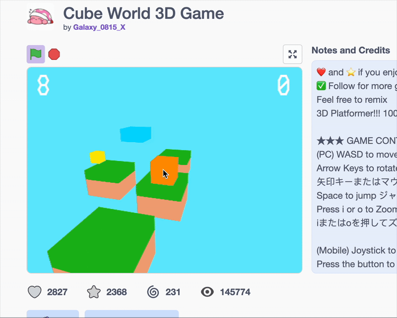

Week by week programming - Intro to Video Game Design YMCA
Week 1
Intro to Scratch
In our introduction to Scratch, we will explore the fundamentals of block-based programming to create interactive games and animations. Students will learn essential programming concepts like sequences, loops, conditionals, and variables while developing their computational thinking skills. Through hands-on projects, we'll design sprites, create backgrounds, and implement basic game mechanics that respond to user input. By the end of this session, participants will understand how to build simple games and have the foundation needed to develop more complex projects as we progress through our Video Game Design course.
Important Link
https://scratch.mit.edu/ https://scratch.mit.edu/projects/editor/?tutorial=getStarted https://ctrlshift.mste.illinois.edu/files/2015/08/ScratchDocBooklet.pdf Scratch.pdf Pixel Art Fundamentals
Pixel art is the foundation of classic video game visuals. In this session, students will learn how to create expressive characters and environments using limited color palettes and pixel-by-pixel precision. We'll cover basic techniques including proper use of the grid, color theory for pixel art, sprite design principles, and simple animation fundamentals. Students will create their own pixel art characters that can later be integrated into their Scratch games
PixelArt.pdf